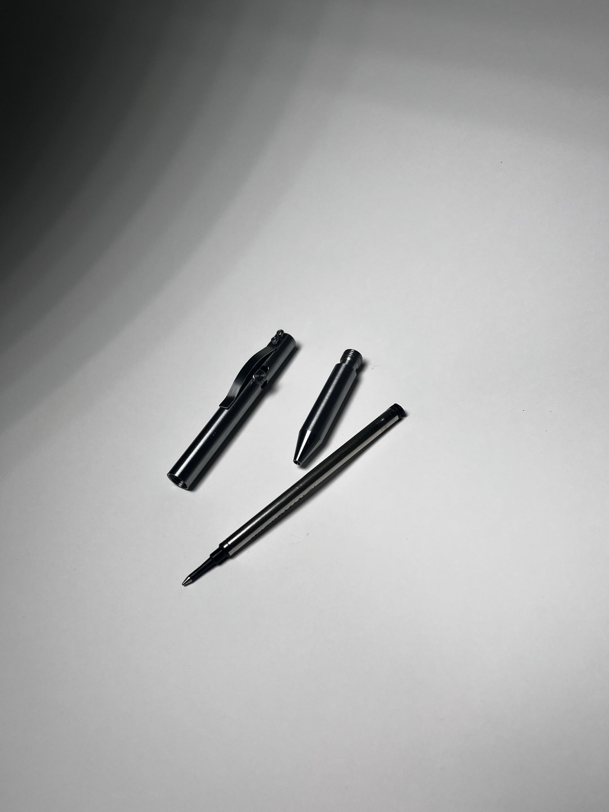

Pen Machining Project
Steel bolt-action pen
Overview
This was a personal machining project I did at Dartmouth's Machine Shop: a bolt-action pen,
machined entirely from steel and sized to take standard G2 ink cartridges.
The build combined various mill and lathe operations, including OD/ID threading and rotary table
work to cut the bolt-action flutes. I made the clip by machining, bending, and polishing an old bandsaw blade. After proving the design in steel, I made additional versions
in copper, titanium, and stainless steel. I unfortunately gifted all of these iterations to friends/family so I do not have photos.
Gallery

